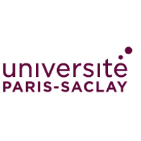
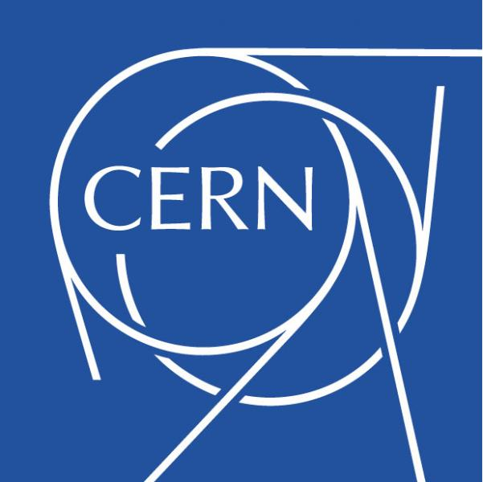

[February 2021- Now] - MUNIC
Data Science Intern
Telematics, a term resulting from the combination of the word telecommunication and computing,
covers all applications combining telecommunications and computing. It arouses a growing interest,
especially in the automotive field. Indeed, automotive telematics makes possible a vast field of applications,
interesting professionals and individuals. Some examples are insurance per kilometer, automatic signalling of breakdowns,
theft prevention and fleet management.
Munic Car Data offers innovative automotive telematics technology. It markets electronic boxes (OBD dongles) allowing vehicles
to communicate with the company's software platform called Cloud Connect. Among other things, this platform continuously
processes information such as position, speed and fuel level. From this data, additional knowledge can be extracted in real time.
For example: detection of trips (start, end), calculation of driving quality (eco-score, safety score), etc.
The retrieval of clean and reliable GPS data plays a crucial role for the proper functioning of the algorithms implemented by MUNIC.
However, several obstacles may arise when it comes to recovering clean GPS data (e.g. absence of GPS signal, dense urban areas ...).
In order to remedy this, it is necessary to implement a dead reckoning system that combines information
from several sensors (accelerometer, speed, ...) to provide less noisy GPS coordinates in case the GPS signal is present,
or to estimate the current position in case of absence of the signal. The objective of this internship is
to implement an optimized version of an extended Kalman filter that allows to correct the GPS data while taking into account
the limited resources of the OBD box and the real time aspect of the problem.
Keywords : Extended Kalman Filter, Global Positioning System, Dead Reckoning, OBD dongles

[2020-2021] - Paris-Saclay University
Mobile Autonomous Systems master's student
The objective of this curriculum is to enable students to master the concepts, the models, and the techniques
required to design and develop mobile autonomous systems (land and aerial vehicles, robots, etc.).
The curriculum covers the entire "perception, decision, action" cycle including the "communication" and "interface" aspects
between the control center and the operating part. The curriculum has two main characteristics:
the first involves "control" and is for engineers with strong skills in advanced automatic systems.
The second involves "perception" and deals with using and combining multi-sensorial information from various embedded sensors.
The training is backed by the IBISC laboratory, which is associated with the UFR of the Science and Technologies of the UEVE.
The teaching staff does research on aerial or land transportation issues, on aeronautic or spatial robotics, in the following disciplines:
modeling and simulation, automatic, signal and image processing, embedded IT.
[March 2020 - September 2020] - SAMP
3D Deep learning R&D Intern
Samp is a deep tech startup that helps large industrial facilities successfully go through constant modernization required
to meet the fundamental challenges of safety and sustainability.
At Samp, we believe that our ability as a society to collectively transition to a sustainable world first and foremost depends
upon how we will manage our large industrial facilities.
We provide software solutions that capture and exposes a reliable 3D model of the facilities to all players, a "Digital Twin".
We are backed by one of Europe’s leading VC firms – Entrepreneur First – and are based in Station F.
For my internship project at SAMP, it was about testing multiple 3D deep learning state of the art methods for semantic & instance segmentation on 3D Point cloud data.
The methods that have been tested in detail for semantic segmentation are MinkowskiNets and KPConv, and JSIS3D for instance segmentation.
Keywords : Point Clouds, Semantic Segmentation, Instance Segmentation

[2019-2020] - University of Paris
Computer Vision master's student
The main goals of this track are :
Train professionals to master indexing and automatic processing procedures aimed at digital content.
Provide students with excellent imaging skills and in-depth knowledge of theoretical and practical mechanisms.
Acquire the fundamental skills of image analysis and knowledge engineering by incorporating indexing processes
and also the concepts of economic intelligence and strategic surveillance.

[2019-2019] - European Organization for Nuclear Research (CERN)
Summer Student & Intern
The project was to develop a new python-based probing app
for SLS (Service Level Status) which is a dashboard for services
and meta-services availability and status in EOS (CERN disk storage).
[2014-2019] - Ecole nationale Supérieure d'Informatique (ESI)
Engineer's degree in Computer systems
I was there for my engineering graduation project entitled "Feature Selection for Supervised Classification using a hybrid Bee Swarm
Optimization and Reinforcement Learning metaheuristic" where we developed a metaheuristic called QBSO-FS, based on a
reinforcement learning algorithm (Q-learning).
Advisors : Sadeg S., Hamdad L.
Keywords : Reinforcement Learning, Feature Selection, Supervised Learning, Bee Swarm Optimization
[2018-2019] - Ecole nationale Supérieure d'Informatique (ESI)
Master's degree in Computer systems
The masters' was related to the engineering degree graduation project, and consisted on doing a survey
on the main topics that we worked on : Reinforcement learning, Metaheuristics and Feature selection.
Advisors : Sadeg S., Hamdad L.
[2015-2018] - ELCS Research
Part-time junior developer
ELCS Research is one of the promising healthcare startups in Algeria, with projects like Smarth & Mouachir realtime
dashboards for health establishments. I had the chance to work at the startup for almost 3 years, where I had 2 summer
internships and learned the basics of web & mobile development using technologies like Django, Android & Vuforia.